SUPREMAX
SUPREMAX
Forno Túnel
Ideais para produções contínuas de pães, bolos, tortas, salgados, biscoitos e pizzas.
Máquinas
Linha selecionada para produção de pães, bolos, tortas, salgados, biscoitos, pizzas e massas especiais.
SUPREMAX
Ideais para produções contínuas de pães, bolos, tortas, salgados, biscoitos e pizzas.
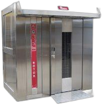
SUPREMAXProduzido totalmente em aço inox. Econômico, versátil e de rápido aquecimento.
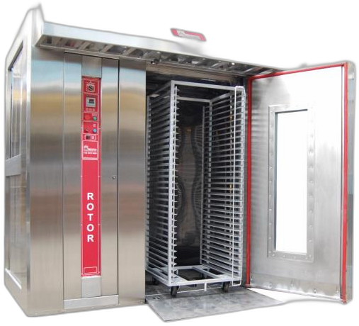
SUPREMAXSistema com carros giratórios, ideal para grandes produções.
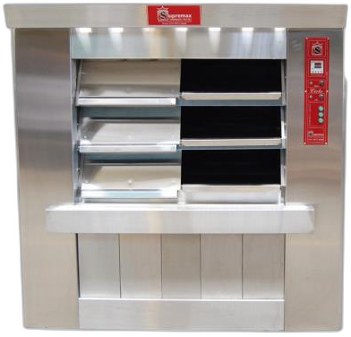
SUPREMAXCâmaras independentes, com controle de lastro e teto.
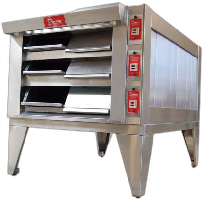
SUPREMAXExcelente padrão de assamento unificado em todas as câmaras.
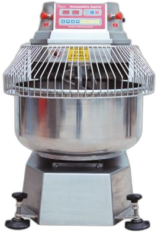
SUPREMAXMistura e cilindra a massa com excelente homogeneidade (25 a 240kg).
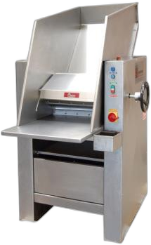
SUPREMAXIdeal para sovar e homogeneizar a massa. Estrutura em aço inox.
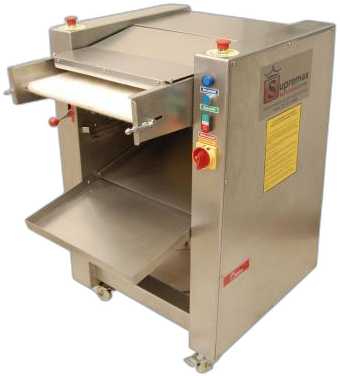
SUPREMAXIdeal para sovar e homogeneizar a massa. Versão em epóxi.
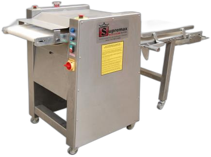
SUPREMAXRecomendada para modelar vários tipos e tamanhos de pães (10 a 600g).
 SUPREMAX
SUPREMAX
Divide e corta massa para vários tamanhos de pães através de 3 canais.
 SUPREMAX
SUPREMAX
Permite dividir e bolear a massa em partes iguais (25g a 90g).
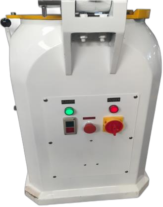
SUPREMAXBoleia até 30 unidades simultaneamente, com alta precisão.
 SUPREMAX
SUPREMAX
Ideal para laminar massa, massas folhadas e croissant (largura útil 500mm).
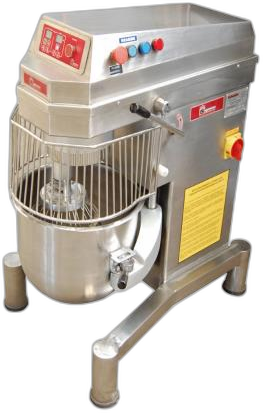
SUPREMAXControle digital com 10 velocidades. Estrutura total em aço inox.
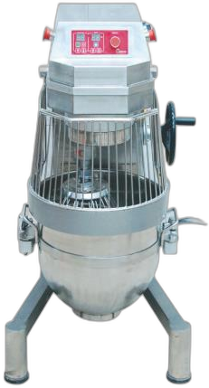
SUPREMAXIdeal para produtos de confeitaria, massas leves e líquidas.
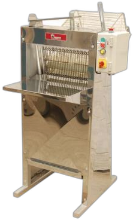
SUPREMAXFatia pães de massa macia em 2 espessuras diferentes (12mm e 14mm).
 SUPREMAX
SUPREMAX
Utilizado na produção de farinha de rosca. Rala e tritura pães torrados.
Categoria
Descrição do produto.